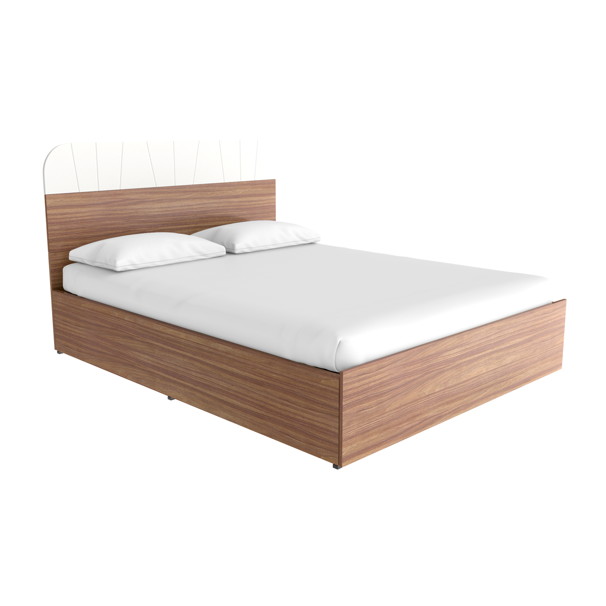

Test Image -
Output on Google lens-Shoes
Output on Mobilnet Model-Letser
Result -
Google lens is more accurate
Test Image -
Output on Google lens-Water Bottle
Output on Mobilnet Model- guillotine
Result -
Google lens is more accurate
Test Image -
Output on Google lens-Headphones
Output on Mobilnet Model- Phone
Result -
Google lens is more accurate
Test Image -
Output on Google lens-Baby Bed
Output on Mobilnet Model-Toaster
Result -
>Google lens is more accurate
Test Image -
Output on Google lens- Bulb
Output on Mobilnet Model- Light
Result -
Google lens is more accurate